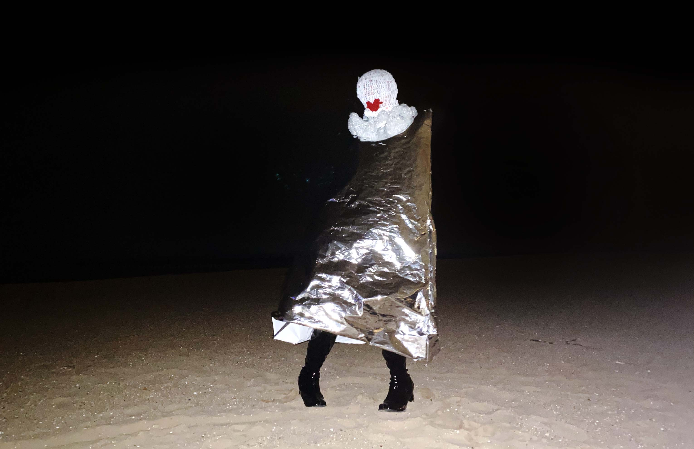

SOPHIE

The creation of this project was such a pivotal moment in my practice. It was such an intense
and visceral project for me to work on because I finally felt comfortable acknowledging my identity in my
work.
This started as a conversation with myself and my eyes of judgment I put on myself. It quickly
turned into a further discussion, including the ideas of discouraging eyes of judgment from my body and my
identity.
The artist and sound designer SOPHIE was a massive inspiration for this project. So much so
that I decided to dedicate this project to her. The process of creating this project started promptly after
her passing on January 30th, 2021. It was the first time in a long time that I felt this intense emptiness.
She meant so much to me. She was and still is a huge contributor and protector of my self-realization, my
sexuality, my identity, my love for music, and so much more.
This ensemble is made up of a few parts. This headpiece was crocheted out of plastic grocery
bags. It disguises all facial features and reapplies them as shapes.
The bodysuit is constructed out of metalized mylar. It is super reflective and allows for my
body to be concealed but is still visible as a body. It is physically constraining—I am unable to move my
arms.
I chose two locations for this ensemble to be documented—one of them being the beach. The
beach, to me, is a place to display and uphold a gender binary. Almost as an advertisement of the body and
its features.
The bathroom is another place that extends the gender binary. In this context, there is privacy
to the body. Nudity is super private but also sought after and taken advantage of. I wanted to see how a
genderless body would fit into these places of intense body display.
This project was a huge accomplishment for me. It was important because, for the longest time,
I've kind of felt like I was just pretending to be an artist. As an artist, there is always a separation of
the art and the artist, and because of that, I think I felt apart from my work. Making myself the canvas was
intense and scary, but it was what I needed to do to remove myself from the paradox.
I want to thank my best friend, artist, printmaker, and sculptress, Sarah Urban for helping me
document this project.
2021, documentation of performativity, plastic grocery bags, red yarn, metalized mylar,
staples, faux leather hells.